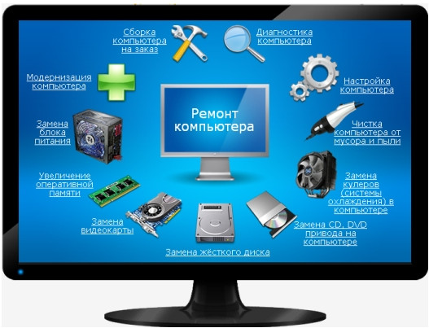

Ремонт компьютеров в Усть-Каменогорске
В нашем сервисном центре в г. Усть-Каменогорск производится ремонт, как стационарных компьютеров, так и переносных ПК и моноблоков. Специалист нашего сервиса проведет полную диагностику и устранит любые неисправности, в том числе:
Мы располагаем комплектом необходимого оборудования для диагностики и обнаружения проблем, как в комплектующих, так и в операционной системе и программах - это дает возможность точно найти неисправность и эффективно ее устранить.
Наши опытные мастера разбираются в большом ассортименте техники, не зависимо от производителя. Кроме того, мы оказываем услуги ремонта на дому с выездом по городу Усть-Каменогорск и в пригород.
Нами оказывается не только экстренная компьютерная помощь, мы также производим обычные виды ремонта в стационаре (удаление вирусов, замена комплектующих, диагностика компьютеров, модернизация, настройка принтеров, сканеров, роутеров и прочей периферии, установка операционной системы и прикладных программ), а также сложный ремонт (пайка чипа, замена чипов, пайка и замена smd-компонентов).
Сервисный центр X2X состоит из команды профессионалов техников и инженеров со стажем, нацеленных на скорое решение неисправностей и неполадок в офисной и компьютерной технике. Мы готовы устранять даже сложные поломки, потому что в сервис набираются всегда профильные специалисты с достаточным опытом в той сфере, в которой ему предстоит работать. Мы также производим ремонт ноутбуков и установку Windows.
Компьютерная помощь, которую мы оказываем в нашем сервис, включает в себя довольно большой пакет услуг, а самыми распространенными работами у нас считаются:
Срочный ремонт компьютера и моноблока производится от 30 минут (в зависимости от сложности ремонта), доплата за срочность 30%.
Если сломался компьютер, привозите к нам в сервис-центр или звоните и давайте заявку на ремонт у вас дома!
Желаете заказать мастера для вашего компьютера или установку программ Windows на компьютер с выездом в городе Усть-Каменогорск, заказывайте по телефонам указанным на сайте или отправьте заявку в наш сервис прямо с сайта!
Ремонт компьютера во многих случаях начинается с его очистки от пыли, смазки вентиляторов и диагностики. Мы производим очень качественную чистку системного блока компьютера воздухом под высоким давлением с применением компрессора, что гарантирует долговременный эффект.
Доверьте ваш компьютер профессионалам нашей компании - это гарантирует его надежную работу в будущем!
- перегрев и сопутствующее выключение устройства;
- ремонт материнской платы и замена плат;
- замена комплектующих вышедших из строя;
- устранение графических проблем из-за шлейфов;
- восстановление и переустановка Windows (Виндовс);
- устранение ошибок в программах и их настройка;
- установка антивирусной программы и лечение вирусов;
- и др. работы по восстановлению компьютера.
Мы располагаем комплектом необходимого оборудования для диагностики и обнаружения проблем, как в комплектующих, так и в операционной системе и программах - это дает возможность точно найти неисправность и эффективно ее устранить.
Наши опытные мастера разбираются в большом ассортименте техники, не зависимо от производителя. Кроме того, мы оказываем услуги ремонта на дому с выездом по городу Усть-Каменогорск и в пригород.
Бесплатная профилактика компьютеров!
Часто ремонт компьютера начинается с полной чистки и профилактики, которая после долгой эксплуатации ему просто необходима, т.к. работа такой техники сильно зависит от качественно охлаждения, а скопление пыли как раз этому препятствует. И мы рады сообщить, что профилактика в нашем сервис-центре проводится Бесплатно!
Диагностика и ремонт
Если вашему компьютеру недостаточно профилактики, то проводится полная диагностика и последующие ремонтные работы.Нами оказывается не только экстренная компьютерная помощь, мы также производим обычные виды ремонта в стационаре (удаление вирусов, замена комплектующих, диагностика компьютеров, модернизация, настройка принтеров, сканеров, роутеров и прочей периферии, установка операционной системы и прикладных программ), а также сложный ремонт (пайка чипа, замена чипов, пайка и замена smd-компонентов).
Сервисный центр X2X состоит из команды профессионалов техников и инженеров со стажем, нацеленных на скорое решение неисправностей и неполадок в офисной и компьютерной технике. Мы готовы устранять даже сложные поломки, потому что в сервис набираются всегда профильные специалисты с достаточным опытом в той сфере, в которой ему предстоит работать. Мы также производим ремонт ноутбуков и установку Windows.
Компьютерная помощь, которую мы оказываем в нашем сервис, включает в себя довольно большой пакет услуг, а самыми распространенными работами у нас считаются:
- Ремонт компьютерной техники любых объемов и сложности на территории г. Усть-Каменогорск
- Настройка нового компьютера и его периферийной техники
- Установка операционных систем Windows и Linux
- Установка и настройка программного обеспечения
- Настройка Wi-Fi роутеров и настройка беспроводной сети
- Установка антивирусных программ и лечение вирусов
- Восстановление удаленных данных с флешек и дисков
- Ремонт любых комплектующих и установка новых
- Расширение памяти жесткого диска
- Модернизация устаревших компьютеров
Сроки выполнения ремонта компьютеров
Стандартный ремонт компьютера или моноблока производится в течение 1-3 дня с момента сдачи в ремонтСрочный ремонт компьютера и моноблока производится от 30 минут (в зависимости от сложности ремонта), доплата за срочность 30%.
Ремонт компьютера на дому или с выездом в офис
Многие проблемы компьютеров и периферии незначительны и решаются на месте в короткие сроки, поэтому вы можете подать заявку на выезд мастера, специалист произведет ремонт у вас дома или в офисе, тем самым Вы сэкономите время и затраты на поездку. Наши мастера имеют с собой необходимые инструменты и программные утилиты для того, что бы оживить Ваш компьютер в большинстве случаев понадобится не больше часа работы сотрудника на выезде.Если сломался компьютер, привозите к нам в сервис-центр или звоните и давайте заявку на ремонт у вас дома!
Желаете заказать мастера для вашего компьютера или установку программ Windows на компьютер с выездом в городе Усть-Каменогорск, заказывайте по телефонам указанным на сайте или отправьте заявку в наш сервис прямо с сайта!
Ремонт компьютера во многих случаях начинается с его очистки от пыли, смазки вентиляторов и диагностики. Мы производим очень качественную чистку системного блока компьютера воздухом под высоким давлением с применением компрессора, что гарантирует долговременный эффект.
Полная чистка системного блока при помощи компрессора высокого давления
Доверьте ваш компьютер профессионалам нашей компании - это гарантирует его надежную работу в будущем!